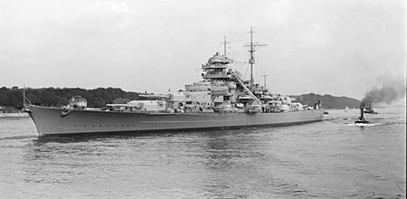

German battleship
Bismarck

Bismarck was the first of two Bismarck-class battleships built for Nazi Germany's Kriegsmarine. Named after Chancellor Otto von Bismarck, the ship was laid down at the Blohm & Voss shipyard in Hamburg in July 1936 and launched in February 1939. Work was completed in August 1940, when she was commissioned into the German fleet. Bismarck and her sister ship Tirpitz were the largest battleships ever built by Germany, and two of the largest built by any European power.
In the course of the warship's eight-month career, Bismarck conducted only one offensive operation that lasted 8 days in May 1941, codenamed Rheinübung. The ship, along with the heavy cruiser Prinz Eugen, was to break into the Atlantic Ocean and raid Allied shipping from North America to Great Britain. The two ships were detected several times off Scandinavia, and British naval units were deployed to block their route. At the Battle of the Denmark Strait, the battlecruiser HMS Hood initially engaged Prinz Eugen, probably by mistake, while HMS Prince of Wales engaged Bismarck. In the ensuing battle Hood was destroyed by the combined fire of Bismarck and Prinz Eugen, which then damaged Prince of Wales and forced her retreat. Bismarck suffered sufficient damage from three hits by Prince of Wales to force an end to the raiding mission.
The destruction of Hood spurred a relentless pursuit by the Royal Navy involving dozens of warships. Two days later, heading for occupied France to effect repairs, Bismarck was attacked by fifteen Fairey Swordfish biplane torpedo bombers from the aircraft carrier HMS Ark Royal; one scored a hit that rendered the battleship's steering gear inoperable. In her final battle the following morning, the already-crippled Bismarck was engaged by two British battleships and two heavy cruisers, and sustained incapacitating damage and heavy loss of life. The ship was scuttled to prevent her being boarded by the British, and to allow the ship to be abandoned so as to limit further casualties. Most experts agree that the battle damage would have caused her to sink eventually.
The wreck was located in June 1989 by Robert Ballard, and has since been further surveyed by several other expeditions.
The two Bismarck-class battleships were designed in the mid-1930s by the German Kriegsmarine as a counter to French naval expansion, specifically the two Richelieu-class battleships France had started in 1935. Laid down after the signing of the Anglo-German Naval Agreement of 1935, Bismarck and her sister Tirpitz were nominally within the 35,000-long-ton (36,000 t) limit imposed by the Washington Naval Treaty that governed battleship construction in the interwar period. The ships secretly exceeded the figure by a wide margin, though before either vessel was completed, the international treaty system had fallen apart following Japan's withdrawal in 1937, allowing signatories to invoke an "escalator clause" that permitted displacements as high as 45,000 long tons (46,000 t).